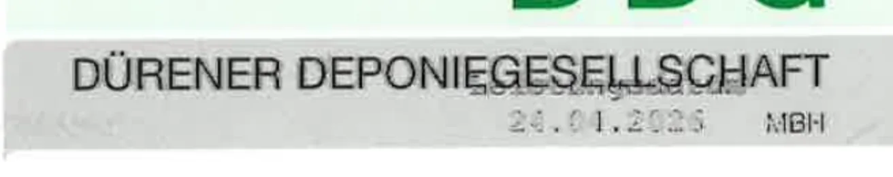
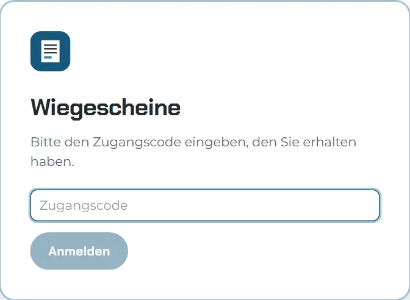
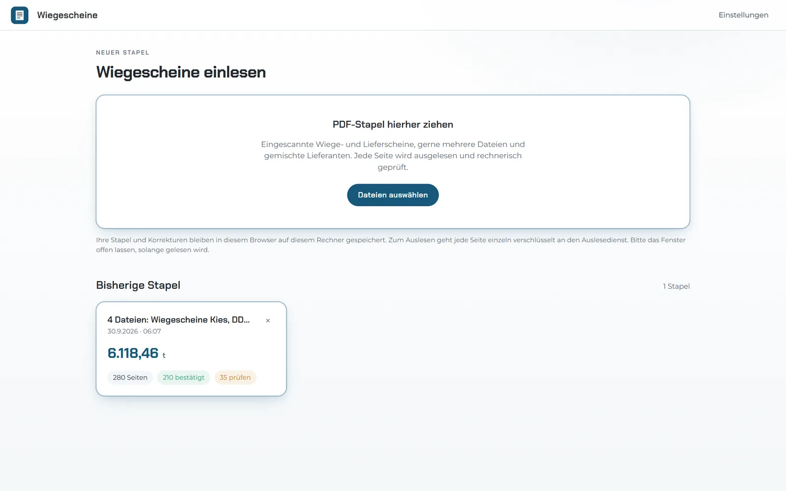
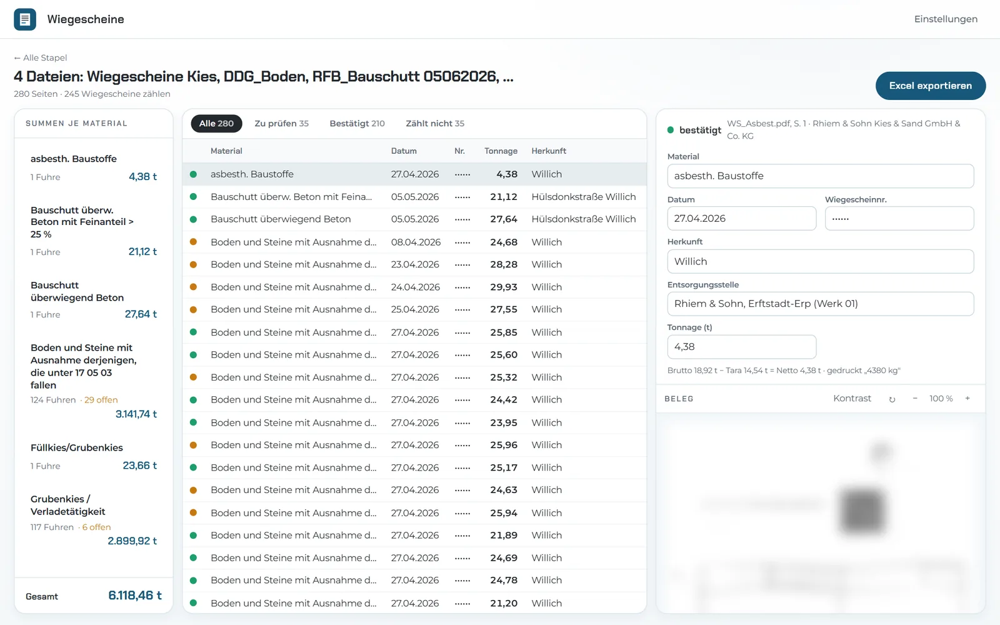
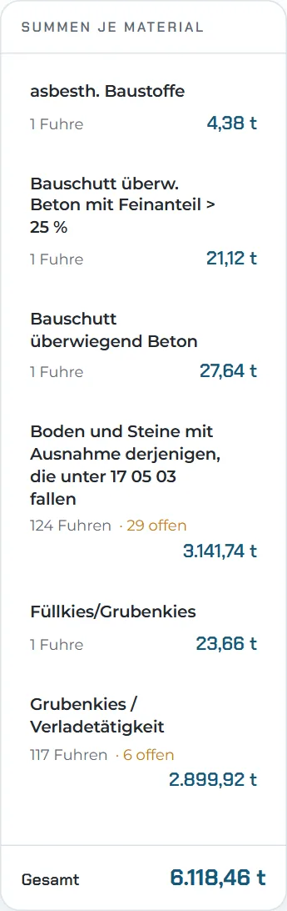
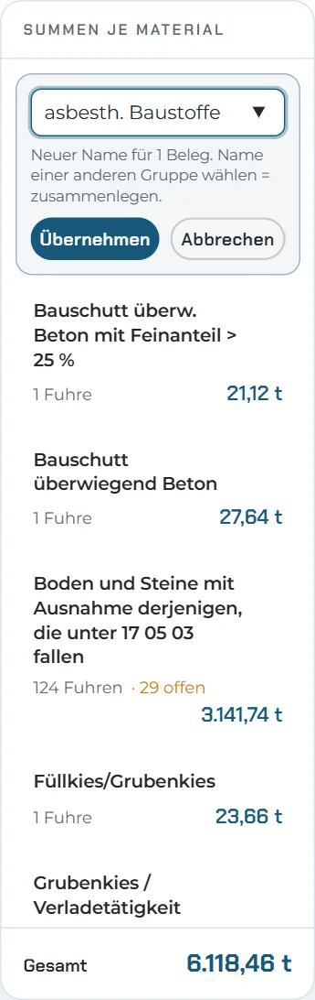
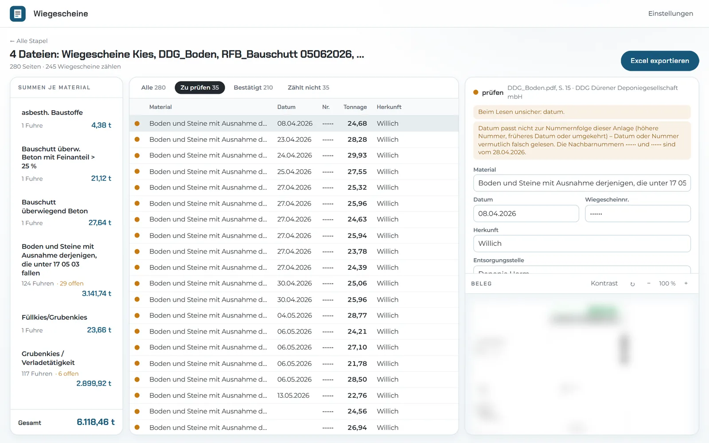
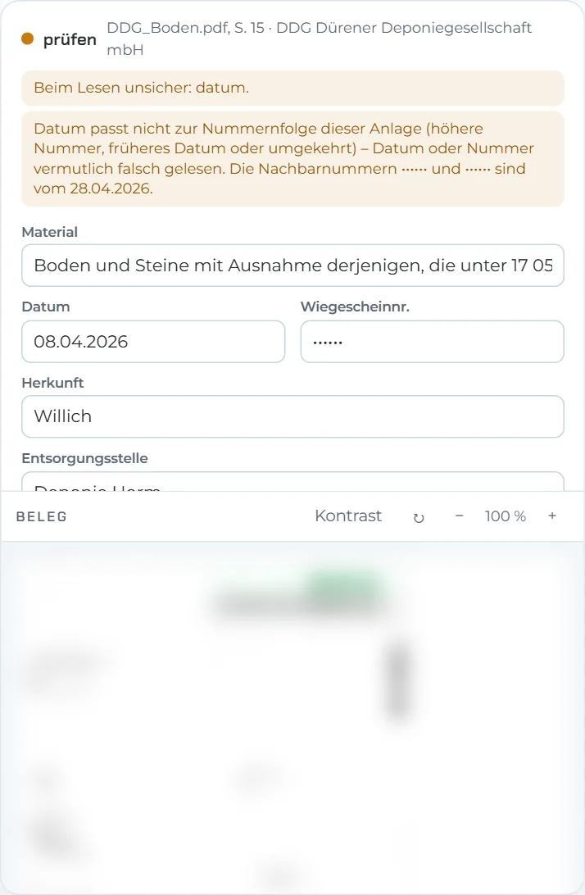
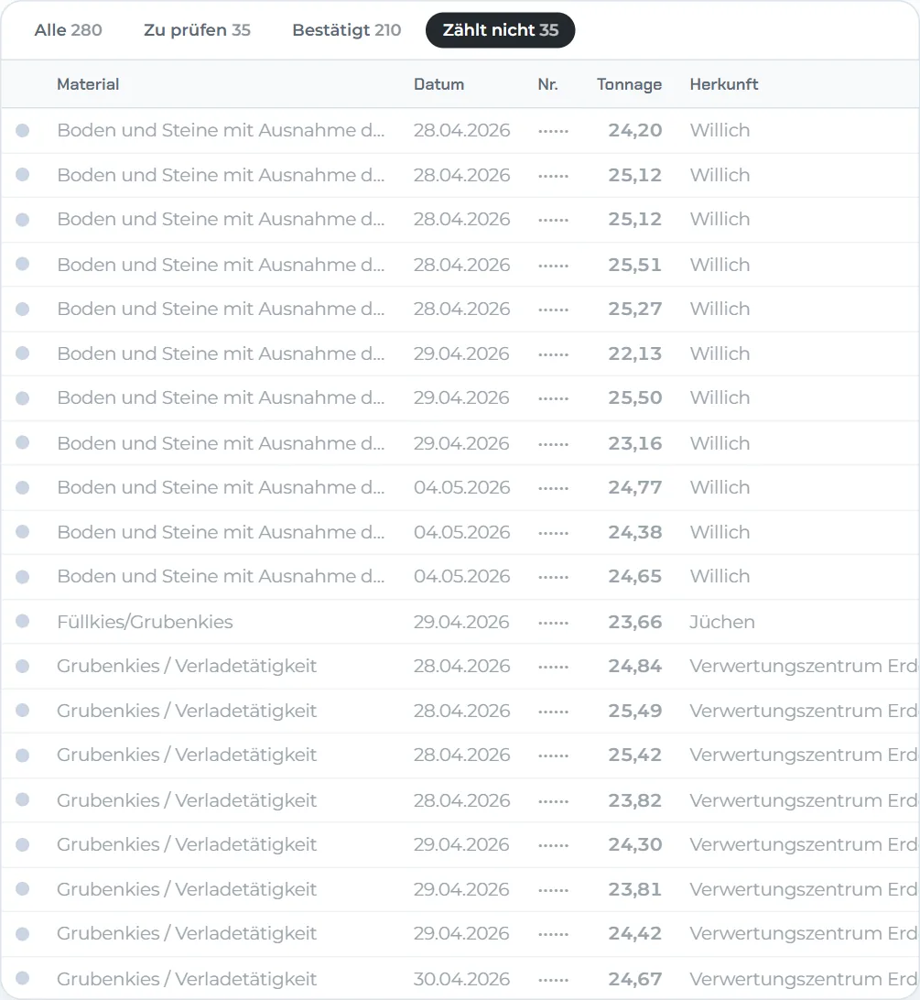

Die App hat den ganzen Stapel gelesen: 4 PDFs mit 280 Seiten. Sie kommt auf dieselben Zahlen wie die geprüfte Vorschau. Hier stehen das Ergebnis, die App und der Ablauf im Alltag.
Das passt genau zur geprüften Vorschau. Anzahl und Tonnen sind gleich.
35 Seiten zählen nicht. Das sind Duplikate und doppelt gescannte Scheine. Die App erkennt sie selbst.
| Material | Schlüssel | Fuhren | Tonnen |
|---|---|---|---|
| Boden und Steine mit Ausnahme derjenigen, die unter 17 05 03 fallen | 170504 | 124 | 3.141,74 |
| Grubenkies / Verladetätigkeit | 87101 | 117 | 2.899,92 |
| Bauschutt überwiegend Beton | 170101 | 1 | 27,64 |
| Füllkies/Grubenkies | nicht lesbar | 1 | 23,66 |
| Bauschutt überw. Beton mit Feinanteil > 25 % | 170101 | 1 | 21,12 |
| asbesth. Baustoffe | 170605* | 1 | 4,38 |
| Gesamt | 245 | 6.118,46 |
Die Namen stehen so da, wie sie auf den Scheinen gedruckt sind.
35 Zeilen sind gelb. Das ist etwa jede siebte Zeile. Das sind die Gründe:
| Grund | Zeilen |
|---|---|
| Das Datum ist nicht lesbar, weil der Druck sehr blass ist. Meist nennt die App die zwei möglichen Tage. | 11 |
| Das Datum ist aus der Nummernfolge übernommen. Es muss nur bestätigt werden. | 8 |
| Das Datum passt nicht zur Nummernfolge. | 2 |
| Das Datum ist unsicher gelesen. | 4 |
| Nummer, Baustelle oder Material sind unsicher gelesen. | 10 |
| Zusammen | 35 |
Am schwersten ist das Datum auf den Scheinen von DDG. Es steht blass im grauen Kasten oben rechts. Dafür hat die App den Knopf „Kontrast“ am Bild vom Schein.

Ohne Kontrast
Mit Kontrast: 24.04.2026
Hilft auch der Kontrast nicht, hilft die Nummernfolge. Ein Werk nummeriert seine Scheine fortlaufend. Sind die Nachbarn vom selben Tag, steht das Datum fest.
Die App läuft im Browser. Auf dem Rechner muss nichts eingerichtet werden.
Beim ersten Öffnen fragt die App nach dem Zugangscode. Danach merkt sich der Browser die Anmeldung.

Die PDFs lassen sich in das große Feld ziehen. Oder ein Klick auf „Dateien auswählen“ öffnet die Auswahl. Mehrere Dateien bilden zusammen einen Stapel. Ein Stapel darf Scheine von mehreren Firmen mischen.
Danach liest die App Seite für Seite. Ein Balken zeigt den Stand. Das Fenster muss so lange offen bleiben. Beim Test hat die App für 280 Seiten 11 Minuten gebraucht.
Alle Stapel bleiben als Karte auf der Startseite. Die Karte zeigt Seiten, Tonnen und offene Zeilen.

Nach dem Lesen öffnet sich die Prüfansicht. Sie hat drei Teile.

Auf den Bildern hier ist der Schein unscharf. In der App ist er gut lesbar.
Die App nimmt das Material so, wie es auf dem Schein steht. Jede Firma schreibt dasselbe Material manchmal anders.
Dafür gibt es den Stift neben jedem Material. Er öffnet ein Feld für einen neuen Namen. Bekommen zwei Materialien denselben Namen, zählt die App sie zusammen.
Die Änderung gilt für alle Scheine mit diesem Material. Sie bleibt auch beim nächsten Öffnen erhalten.

Summen je Material

Neuer Name über den Stift
Der Punkt vor jeder Zeile zeigt, ob etwas zu tun ist.
| Farbe | Bedeutung | Was zu tun ist |
|---|---|---|
| Grün | Brutto minus Tara ergibt genau das Netto. Die Zahl ist nachgerechnet. | Nichts. |
| Gelb | Etwas passt nicht ganz. Der Grund steht rechts über den Werten. | Den Schein ansehen. Wert ändern oder „Als geprüft markieren“. |
| Rot | Die Nummer fehlt, oder die Tonnen sind um das Tausendfache falsch. | Den Wert am Schein ablesen und eintragen. |
| Grau | Die Seite zählt nicht. Das ist zum Beispiel ein Duplikat oder ein doppelter Scan. | Nichts. Die Zeile steht nur zur Kontrolle am Ende. |
Der Knopf „Zu prüfen“ über der Tabelle zeigt nur die offenen Zeilen. Die Taste N springt zur nächsten offenen Zeile. Mit Enter ist eine Zeile geprüft.



Links: ein Schein mit Hinweis. Rechts: Seiten, die nicht zählen, mit dem Grund.
Ein Klick auf „Excel exportieren“ lädt die Datei. Sie hat vier Blätter.
| Material | Datum | Herkunft | Entsorgungsstelle | Nr. | Tonnage |
|---|---|---|---|---|---|
| Boden und Steine … | 23.04.2026 | Willich | Deponie Horm | •••••• | 28,28 |
| Boden und Steine … | 24.04.2026 | Willich | Deponie Horm | •••••• | 29,93 |
| … | |||||
| Summe Boden und Steine … | 124 Fuhren | 3.141,74 | |||
| Grubenkies / Verladetätigkeit | 23.04.2026 | Verwertungszentrum Erdenwerk (Werk 67), Neuss | •••••• | 24,73 | |
| Grubenkies / Verladetätigkeit | 23.04.2026 | Verwertungszentrum Erdenwerk (Werk 67), Neuss | •••••• | 25,40 | |
| … | |||||
| Summe Grubenkies / Verladetätigkeit | 117 Fuhren | 2.899,92 | |||
| Gesamt | 245 Fuhren | 6.118,46 | |||
Ausschnitt aus dem Blatt „Wiegescheine“. Die Nummern sind hier unkenntlich gemacht. Am Handy lässt sich die Tabelle seitlich schieben.
Die Seiten, die nicht zählen, stehen ganz am Ende. Sie sind in keiner Summe enthalten.
Das Abtippen entfällt. Übrig bleibt der Blick auf die wenigen gelben Zeilen.
Stapel und Korrekturen liegen nur in diesem Browser auf diesem Rechner. Wer die Browserdaten löscht, löscht auch die Stapel. Die Excel deshalb immer laden und sichern.
An einem anderen Rechner sind die Stapel nicht zu sehen. Später gibt es eine Fassung für mehrere Personen. Dann hat jede Person ein eigenes Login.
Die App sucht nicht nach festen Stellen auf dem Schein. Sie liest den Schein wie ein Mensch. Scheine von neuen Firmen gehen deshalb meist ohne Anpassung.
Zum Lesen geht jede Seite einzeln an die KI von Anthropic. Die Verbindung ist verschlüsselt. Die Excel und die Stapel bleiben im Browser. Vor dem festen Einsatz folgt ein Vertrag zur Auftragsverarbeitung.
Diese Punkte sind noch zu klären. Sie ändern nur wenig an den Summen.